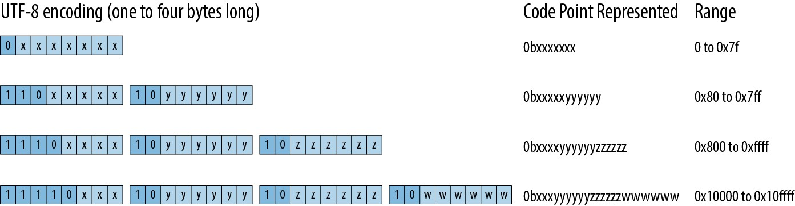
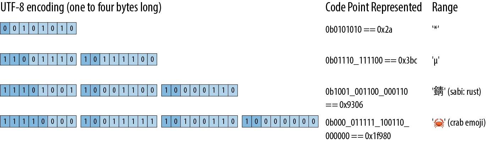
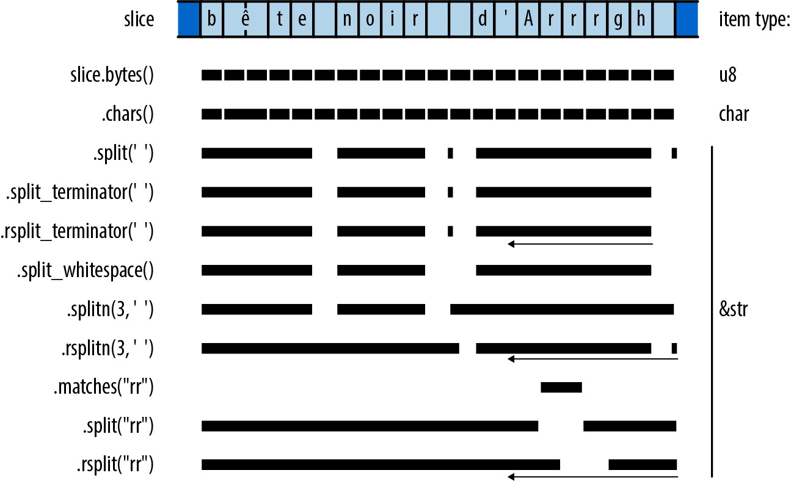

Chapter 17 字符串与文本
The string is a stark data structure and everywhere it is passed there is much duplication of process. It is a perfect vehicle for hiding information.
——Alan Perlis, epigram #34
我们已经使用过了Rust中的主要文本类型：String、str和char。在字符串类型中，我们介绍了字符和字符串字面量的语法并且展示了字符串在内存中如何表示。在本章中，我们将更加详细地介绍文本。
在本章中：
-
1.
我们会提供一些Unicode的背景知识，帮助你更好地理解标准库的设计。
-
2.
我们会介绍char类型，它表示单个Unicode码点。
-
3.
我们会介绍String和str类型，它们表示有所有权的和借用的Unicode字符序列。它们有非常多的方法用于构建、搜索、修改、迭代它们的内容。
-
4.
我们会介绍Rust的字符串格式化设施，例如println!和format!宏。你可以编写自己的用于字符串格式化的宏，以及扩展它们来支持你自定义的类型。
-
5.
我们会给出Rust中正则表达式支持的一个概述。
-
6.
最后我们会讨论为什么Unicode规范化很重要，并展示如何在Rust中实现它。
17.1 Unicode背景知识
本书是关于Rust的，而不是关于Unicode的，事实上已经有整本专门介绍它的书了。但Rust的字符和字符串类型被设计为Unicode。这里有一些有助于理解Rust的Unicode知识。
17.1.1 ASCII、Latin-1和Unicode
在所有ASCII码点范围（0到0x7f）内Unicode和ASCII完全相同：例如，这两种编码中字符*都是码点42。类似的，Unicode把0到0xff分配给与ISO/IEC 8859-1字符集相同的字符，这个字符集是ASCII的八位超集，用于西欧语言。Unicode把这个码点范围称为Latin-1代码块，因此我们采用更有表现力的名称Latin-1来指代ISO/IEC 8859-1。
由于Unicode是Latin-1的超集，把Latin-1转换为Unicode甚至不需要一张表：
17.1.2 UTF-8
Rust的String和str类型使用UTF-8编码形式来表示文本。UTF-8把一个字符编码为一个一到四字节的序列（图17-1）。

对于良构的（well-formed）UTF-8序列有两条限制。第一，任何给定的码点只有最短的编码被认为是良构的；你不能用四个字节去编码一个只需要三个字节就能表示的码点。这条规则确保了一个给定的码点有且仅有一种UTF-8编码。第二，良构的UTF-8不能编码0xd800到0xdfff或者超过0x10ffff的数字：这些数字要么被保留用于非字符目的，要么完全超出了Unicode的范围。
图17-2展示了一些例子。

注意，即使螃蟹emoji有一个首字节只给码点贡献了零的编码，它仍然需要一个四字节的编码：三字节的UTF-8编码只能表示16位的码点，而0x1f980有17位长。
下面是一个包含不同长度编码的字符的字符串示例：
图17-2还展示了一些UTF-8非常有用的特性：
-
•
由于UTF-8把0到0x7f的码点编码为恰好是0到0x7f的字节，因此持有ASCII文本的字节范围是有效的UTF-8。而且如果一段UTF-8字符串只包含ASCII字符，那么反过来也成立：它的UTF-8编码也是有效的ASCII。
对于Latin-1则不成立：例如，Latin-1把é编码为字节0xe9，而UTF-8会把0xe9解释为某个三字节编码的第一个字节。
-
•
通过查看任意字节的高位，你可以立即判断出它是某个字符的UTF-8编码的开头，还是该编码中间的某个字节。
-
•
仅凭一个编码的首字节，通过它的前导位就能知道编码的完整长度。
-
•
由于没有编码长于四个字节，UTF-8处理永远不需要无界循环，这在处理不可信数据时非常方便。
-
•
在良构的UTF-8中，即使你从字节序列中间的任意位置开始，也总能明确地判断出字符编码在哪里开始、在哪里结束。UTF-8的首字节和后续字节总是可以区分的，因此一个编码不可能在另一个编码的中间开始。首字节决定了编码的总长度，因此没有任何编码是另一个编码的前缀。这带来很多不错的结果。例如，在UTF-8字符串中搜索一个ASCII分隔符字符只需要简单扫描分隔符的字节即可。它永远不会作为任何多字节编码的一部分出现，所以完全不需要跟踪UTF-8的结构。类似地，在一个字节串中搜索另一个字节串的算法，可以直接用于UTF-8字符串而不需要任何修改，即使有些算法并不会检查被搜索文本的每一个字节。
虽然可变宽度的编码比固定宽度的编码更复杂，但正是这些特性让UTF-8比你可能预期的更加易于使用。标准库为你处理了大多数方面。
17.2 字符(char)
一个Rust的char是一个持有Unicode码点的32位值。char被保证落在0到0xd7ff或0xe000到0x10ffff的范围内；所有创建和操作char值的方法都确保这一点成立。char类型实现了Copy和Clone，以及所有通常用于比较、哈希和格式化的trait。
在下面的描述中，变量ch的类型始终是char。
17.2.1 字符分类
char类型有把字符划分为几个常见类别的方法，如表17-1所列。它们都依据Unicode中的定义。
| 方法 | 说明 | 示例 | |||||
| ch.is_numeric() | 数字字符。包括Unicode通用类别“Number; digit”和“Number; letter”，但不包括“Number; other”。 |
|
|||||
| ch.is_alphabetic() | 字母字符：Unicode的“Alphabetic”派生属性。 |
|
|||||
|
数字或字母，如前所述。 |
|
|||||
| ch.is_whitespace() | 空白字符：Unicode字符属性“WSpace=Y”。 |
|
|||||
| ch.is_control() | 控制字符：Unicode的“Other, control”通用类别。 |
|
一组与之平行的方法只限于ASCII，对任何非ASCII的char都返回false（表17-2）。
| 方法 | 说明 | 示例 | ||||||
| ch.is_ascii() | 一个ASCII字符：码点在0到127（含）之间。 |
|
||||||
|
大写或小写的ASCII字母，在’A’..=’Z’或’a’..=’z’范围内。 |
|
||||||
| ch.is_ascii_digit() | 一个ASCII数字，在’0’..=’9’范围内。 |
|
||||||
|
’0’..=’9’、’A’..=’F’或’a’..=’f’范围内的任意字符。 | |||||||
|
一个ASCII数字或大写或小写字母。 |
|
||||||
| ch.is_ascii_control() | 一个ASCII控制字符，包括“DEL”。 |
|
||||||
| ch.is_ascii_graphic() | 任何在页面上留下墨迹的ASCII字符：既不是空格也不是控制字符。 |
|
||||||
|
ASCII大写和小写字母。 |
|
||||||
|
既不是字母也不是数字的ASCII图形字符。 | |||||||
|
一个ASCII空白字符：空格、水平制表符、换行符、换页符或回车符。 |
|
所有的is_ascii_...方法在u8字节类型上也可以使用：
在把这些函数用于实现现有的规范（比如某种编程语言的标准或文件格式）时要小心，因为分类可能有令人惊讶的差异。例如，注意is_whitespace和is_ascii_whitespace对某些字符的处理是不同的：
char::is_ascii_whitespace函数实现的是许多Web标准通用的空白字符定义，而char::is_whitespace遵循的是Unicode标准。
17.2.2 处理数字
对于处理数字，你可以使用下面的方法：
ch.to_digit(radix)
判断ch是不是radix进制中的数字。如果是，返回Some(num)，其中num是一个u32；否则返回None。它只识别ASCII数字，而不识别char::is_numeric覆盖的更广泛的字符类别。radix参数的范围可以是2到36。对于大于10的进制，两种大小写的ASCII字母都被视为数字，值从10到35。
std::char::from_digit(num, radix)
一个自由函数，如果可能的话，把u32数字值num转换为char。如果num可以表示为radix进制中的一个数字，from_digit返回Some(ch)，其中ch就是这个数字；当radix大于10时，ch可能是小写字母。否则返回None。
这是to_digit的逆操作。如果std::char::from_digit(num, radix)是Some(ch)，那么ch.to_digit(radix)就是Some(num)。如果ch是一个ASCII数字或小写字母，那么反过来也成立。
ch.is_digit(radix)
如果ch是radix进制中的一个ASCII数字，返回true。这等价于ch.to_digit(radix) != None。
所以，例如：
17.2.3 字符大小写转换
对于处理字符大小写：
ch.is_lowercase(), ch.is_uppercase()
指示ch是小写还是大写字母字符。它们遵循Unicode的Lowercase和Uppercase派生属性，因此覆盖希腊语和西里尔语等非拉丁字母，并对ASCII给出预期的结果。
ch.to_lowercase(), ch.to_uppercase()
返回产生ch的小写和大写等价字符的迭代器，依据Unicode默认大小写转换算法：
这些方法返回一个迭代器而不是单个字符，因为Unicode中的大小写转换并不总是一对一的过程：
// 德语字母"sharp S"的大写形式是"SS"： let mut upper = 'ß'.to_uppercase(); assert_eq!(upper.next(), Some('S')); assert_eq!(upper.next(), Some('S')); assert_eq!(upper.next(), None); // Unicode规定把土耳其语带点的首都'İ'转小写为'i' // 后面跟着`'\u{307}'`（COMBINING DOT ABOVE，上方组合点）， // 这样之后再次转回大写时可以保留这个点。 let ch = 'İ'; // `'\u{130}'` let mut lower = ch.to_lowercase(); assert_eq!(lower.next(), Some('i')); assert_eq!(lower.next(), Some('\u{307}')); assert_eq!(lower.next(), None);为了方便，这些迭代器实现了std::fmt::Display trait，所以你可以把它们直接传给println!或write!宏。
17.2.4 与整数之间的转换
Rust的as运算符可以把char转换为任何整数类型，静默地截断任何高位的比特：
17.3 String和str
Rust的String和str类型被保证只持有良构的（well-formed）UTF-8。库通过限制你创建String和str值的方式以及你可以对它们执行的操作来确保这一点，使得值在被引入时是良构的，并且在你使用它们的过程中保持良构。它们的所有方法都保护这一保证：没有任何安全操作可以在它们上引入不良构的UTF-8。这简化了处理文本的代码。
Rust根据方法是否需要可调整大小的缓冲区，或者是否满足于就地使用文本，把文本处理方法放在str或String上。由于String解引用到&str，在str上定义的每个方法都可以直接在String上使用。本节呈现来自两种类型的方法，按大致功能分组。
这些方法按字节偏移量索引文本，并按字节而非字符测量其长度。实际上，考虑到Unicode的性质，按字符索引并不像看起来那么有用，而字节偏移量更快、更简单。如果你试图使用一个落在某个字符的UTF-8编码中间的字节偏移量，方法会panic，所以你无法用这种方式引入不良构的UTF-8。
String被实现为Vec<u8>的一个包装器，确保vector的内容总是良构的UTF-8。Rust永远不会改变String去使用更复杂的表示，所以你可以假设String具有与Vec相同的性能特征。
在这些解释中，变量具有表17-3中给出的类型。
| 变量 | 假定的类型 |
| string | String |
| slice | &str，或任何解引用为&str的类型，比如String或Rc<String> |
| ch | char |
| n | usize，一个长度 |
| i, j | usize，一个字节偏移量 |
| range | 一个usize字节偏移量的范围，可以是像i..j这样完全有界的，或像i..、..j或..这样部分有界的 |
| pattern | 任何模式类型：char、String、&str、&[char]或FnMut(char) -> bool |
我们在搜索文本的模式中描述模式类型。
17.3.1 创建String值
有几种常见的方法可以创建String值：
String::new()
返回一个新的空字符串。它没有堆分配的缓冲区，但会按需分配一个。
String::with_capacity(n)
返回一个新的空字符串，其缓冲区被预先分配以容纳至少n个字节。如果你事先知道要构建的字符串的长度，这个构造函数让你从一开始就把缓冲区大小调整正确，而不是在构建字符串的过程中调整缓冲区大小。如果字符串的长度超过n个字节，字符串仍然会按需增长其缓冲区。和vector一样，字符串有capacity、reserve和shrink_to_fit方法，但通常默认的分配逻辑就足够了。
str_slice.to_string()
分配一个新的String，其内容是str_slice的副本。我们已经在整本书中一直使用像"literal text".to_string()这样的表达式来从字符串字面量创建String。
iter.collect()
通过连接迭代器的条目来构造一个字符串，这些条目可以是char、&str或String值。例如，要删除字符串中的所有空格，你可以写：
这样使用collect利用了String对std::iter::FromIterator trait的实现。
slice.to_owned()
返回slice的副本，作为一个新分配的String。str类型不能实现Clone：该trait会要求对&str调用clone返回一个str值，但str是unsized的。不过，&str确实实现了ToOwned，它允许实现者指定其有所有权的等价类型。
17.3.2 简单的查看方法
这些方法从字符串切片获得基本信息：
slice.len()
slice的长度，以字节为单位。
slice.is_empty()
如果slice.len() == 0则为true。
slice[range]
返回借用slice的给定部分的切片。部分有界和无界的范围都可以；例如：
注意你不能用单个位置索引字符串切片，比如slice[i]。在给定的字节偏移量处获取单个字符有点笨拙：你必须对切片产生一个chars迭代器，并要求它解析一个字符的UTF-8：
不过，你应该很少需要这样做。Rust有更好的方式来迭代切片，我们将在迭代文本中描述。
slice.split_at(i)
返回从slice借用的两个共享切片的元组：字节偏移量i之前的部分，以及它之后的部分。换句话说，这返回(slice[..i], slice[i..])。
slice.is_char_boundary(i)
如果字节偏移量i落在字符边界之间，因此适合作为slice的偏移量，则为true。
自然地，切片可以比较相等、排序和哈希。有序比较只是把字符串视为Unicode码点的序列，并按字典顺序比较它们。
17.3.3 附加和插入文本
下面的方法向String添加文本：
string.push(ch)
把字符ch附加到string的末尾。
string.push_str(slice)
附加slice的全部内容。
string.extend(iter)
把迭代器iter产生的条目附加到字符串中。迭代器可以产生char、str或String值。这些是String对std::iter::Extend的实现：
string.insert(i, ch)
在string的字节偏移量i处插入单个字符ch。这需要把i之后的任何字符向后移动，为ch腾出空间，所以用这种方式构建字符串可能需要与字符串长度成二次方的时间。
string.insert_str(i, slice)
这对slice做同样的事情，并有相同的性能警告。
String实现了std::fmt::Write，这意味着write!和writeln!宏可以把格式化文本附加到String上：
由于write!和writeln!是为写入输出流而设计的，它们返回一个Result，如果你忽略它，Rust会抱怨。这段代码使用?运算符来处理它，但写入String实际上是不会失败的，所以在这种情况下调用.unwrap()也没问题。
由于String实现了Add<&str>和AddAssign<&str>，你可以写这样的代码：
当应用于字符串时，+运算符按值获取其左操作数，所以它实际上可以复用该String作为加法的结果。因此，如果左操作数的缓冲区足够大以容纳结果，就不需要分配。
然而，这个限制确实不鼓励从末尾向前构建字符串。这种方法性能很差，因为文本必须被反复地向缓冲区末尾移动。
然而，从头到尾附加小块来构建字符串是高效的。String的行为和vector一样，当它需要更多容量时，总是至少把缓冲区的大小翻倍。这使重新复制的开销与最终大小成比例。即便如此，使用String::with_capacity从一开始就以正确的缓冲区大小创建字符串，可以完全避免调整大小，并可以减少对堆分配器的调用次数。
17.3.4 移除和替换文本
String有一些移除文本的方法（这些方法不影响字符串的容量；如果你需要释放内存，使用shrink_to_fit）：
string.clear()
把string重置为空字符串。
string.truncate(n)
丢弃字节偏移量n之后的所有字符，使string的长度最多为n。如果string短于n个字节，这没有效果。
string.pop()
从string移除最后一个字符（如果有的话），并把它作为Option<char>返回。
string.remove(i)
从string移除字节偏移量i处的字符并返回它，把后面的任何字符向前移动。这需要的时间与后面字符的数量成线性关系。
string.drain(range)
返回对给定字节索引范围的一个迭代器，并在迭代器被丢弃时移除这些字符。范围之后的字符被向前移动：
如果你只想移除这个范围，你可以立即丢弃迭代器，而不从中提取任何条目：
string.replace_range(range, replacement)
17.3.5 搜索和迭代的约定
Rust标准库中用于搜索文本和迭代文本的函数遵循一些命名约定，使它们更容易记忆：
-
•
r：大多数操作从头到尾处理文本，但名称以r开头的操作从尾到头工作。例如，rsplit是split的从尾到头版本。在某些情况下，改变方向不仅会影响产生值的顺序，还会影响值本身。关于这个的例子见图17-3。
-
•
n：名称以n结尾的迭代器把自己限制在给定数量的匹配上。
-
•
_indices：名称以_indices结尾的迭代器连同它们通常的迭代值一起产生它们在切片中出现的字节偏移量。
标准库并没有为每个操作提供所有组合。例如，许多操作不需要n变体，因为提前结束迭代很容易。
17.3.6 搜索文本的模式
当标准库函数需要搜索、匹配、分割或修剪文本时，它接受几种不同的类型来表示要查找的内容：
这些类型被称为模式（pattern），大多数操作都支持它们：
标准库支持四种主要的模式：
-
•
一个char作为模式匹配该字符。
-
•
一个String或&str或&&str作为模式匹配与模式相等的子字符串。
-
•
一个FnMut(char) -> bool闭包作为模式匹配闭包返回true的单个字符。
-
•
一个&[char]（不是&str，而是一个char值的切片）作为模式匹配列表中出现的任何单个字符。注意，如果你把列表写成数组字面量，你可能需要调用as_ref()来把类型弄对：
否则，Rust会被固定大小数组类型&[char; 2]弄糊涂，它不幸地不是一个模式类型。
在库自己的代码中，一个模式是任何实现了std::str::Pattern trait的类型。Pattern的细节还不稳定，所以你不能在稳定版Rust中为你自己的类型实现它，但门是敞开的，以便将来允许正则表达式和其他复杂的模式。Rust确实保证现在支持的模式类型将来会继续工作。
17.3.7 搜索和替换
Rust有几个方法用于在切片中搜索模式，并可能用新文本替换它们：
slice.contains(pattern)
如果slice包含pattern的一个匹配，返回true。
slice.starts_with(pattern), slice.ends_with(pattern)
slice.find(pattern), slice.rfind(pattern)
如果slice包含pattern的一个匹配，返回Some(i)，其中i是模式出现的字节偏移量。find方法返回第一个匹配，rfind返回最后一个：
slice.replace(pattern, replacement)
返回一个新的String，通过急切地（eagerly）用replacement替换pattern的所有匹配而形成：
因为替换是急切地完成的，.replace()在重叠匹配上的行为可能会令人惊讶。这里，模式"aba"有四个实例，但在第一个和第三个被替换后，第二个和第四个不再匹配：
slice.replacen(pattern, replacement, n)
这做同样的事情，但最多替换前n个匹配。
17.3.8 迭代文本
标准库提供了几种迭代切片的文本的方式。图17-3展示了一些例子。
你可以把split和match家族看作互为补充：split是匹配之间的范围。

这些方法中的大多数返回可逆的迭代器（也就是说，它们实现了DoubleEndedIterator）：调用它们的.rev()适配器方法给你一个产生相同条目但顺序相反的迭代器。
slice.chars()
返回遍历slice字符的迭代器。
slice.char_indices()
返回遍历slice的字符及其字节偏移量的迭代器：
注意，这并不等同于.chars().enumerate()，因为它提供每个字符在slice内的字节偏移量，而不仅仅是给字符编号。
slice.bytes()
返回遍历slice的单个字节的迭代器，暴露UTF-8编码：
slice.lines()
返回遍历slice各行的迭代器。行以"\n"或"\r\n"结束。产生的每个条目都是借用slice的&str。这些条目不包括行的结束字符。
slice.split(pattern)
返回遍历slice被pattern的匹配分隔开的各个部分的迭代器。对于紧邻的匹配之间，以及slice开头和结尾处的匹配，这会产生空字符串。
如果pattern是&str，返回的迭代器不可逆。这样的模式根据你从哪个方向扫描可以产生不同的匹配序列，而可逆迭代器被禁止这样做。相反，你可能可以使用rsplit方法，接下来描述。
slice.rsplit(pattern)
这个方法相同，但是从尾到头扫描slice，按这个顺序产生匹配。
slice.split_terminator(pattern), slice.rsplit_terminator(pattern)
这些类似，但把pattern视为终止符而不是分隔符：如果pattern正好在slice的末尾匹配，迭代器不会产生一个表示该匹配与slice末尾之间空字符串的空切片，正如split和rsplit所做的那样。例如：
// 这里的':'字符是分隔符。注意最后的""。 assert_eq!("jimb:1000:Jim Blandy:".split(':').collect::<Vec<_>>(), vec!["jimb", "1000", "Jim Blandy", ""]); // 这里的'\n'字符是终止符。 assert_eq!("127.0.0.1 localhost\n\ 127.0.0.1 www.reddit.com\n" .split_terminator('\n').collect::<Vec<_>>(), vec!["127.0.0.1 localhost", "127.0.0.1 www.reddit.com"]); // 注意，没有最后的""！slice.splitn(n, pattern), slice.rsplitn(n, pattern)
这些和split与rsplit类似，除了它们把字符串分割成最多n个切片，在pattern的前n-1个或后n-1个匹配处分割。
slice.split_whitespace(), slice.split_ascii_whitespace()
返回遍历slice被空白分隔的各部分的迭代器。一段多个空白字符被视为单个分隔符。尾部的空白被忽略。
split_whitespace方法使用Unicode对空白的定义，正如char上的is_whitespace方法所实现的。split_ascii_whitespace方法改用char::is_ascii_whitespace，它只识别ASCII空白字符。
slice.matches(pattern)
返回遍历slice中pattern的匹配的迭代器。slice.rmatches(pattern)相同，但从尾到头迭代。
slice.match_indices(pattern), slice.rmatch_indices(pattern)
这些类似，除了产生的条目是(offset, match)对，其中offset是匹配开始的字节偏移量，match是匹配的切片。
17.3.9 修剪
修剪字符串就是移除文本，通常是空白，从字符串的开头或结尾。在清理从文件读取的输入时通常很有用，用户可能为了可读性缩进了文本，或者无意中在一行末尾留下尾随空白。
slice.trim()
返回slice的一个子切片，省略任何前导和尾随的空白。slice.trim_start()只省略前导空白，slice.trim_end()只省略尾随空白：
slice.trim_matches(pattern)
17.3.10 字符串大小写转换
方法slice.to_uppercase()和slice.to_lowercase()返回一个新分配的字符串，持有slice的文本转换后的大写或小写形式。结果可能与slice的长度不同；详情见字符大小写转换。
17.3.11 从字符串解析其他类型
Rust提供了从字符串解析值和产生值的文本表示的标准trait。
如果一个类型实现了std::str::FromStr trait，那么它提供了一种从字符串切片解析值的标准方式：
所有常用的机器类型都实现了FromStr：
char类型也实现了FromStr，用于只含一个字符的字符串：
std::net::IpAddr类型，一个持有IPv4或IPv6互联网地址的枚举，也实现了FromStr：
17.3.12 把其他类型转换为字符串
有三种主要的方式把非文本值转换为字符串：
-
•
具有自然的人类可读打印形式的类型可以实现std::fmt::Display trait，它让你在format!宏中使用{}格式说明符：
assert_eq!(format!("{}, wow", "doge"), "doge, wow");assert_eq!(format!("{}", true), "true");assert_eq!(format!("({:.3}, {:.3})", 0.5, f64::sqrt(3.0)/2.0), "(0.500, 0.866)");// 使用上面的`address`。let formatted_addr: String = format!("{}", address);assert_eq!(formatted_addr, "fe80::3ea9:f4ff:fe34:7a50");Rust的所有机器数值类型都实现Display，字符、字符串和切片也是如此。智能指针类型Box<T>、Rc<T>和Arc<T>在T本身实现Display时也实现Display：它们的显示形式就是其指向内容的显示形式。像Vec和HashMap这样的容器不实现Display，因为这些类型没有单一的自然人类可读形式。
-
•
如果一个类型实现了Display，标准库会自动为它实现std::str::ToString trait，当你不需要format!的灵活性时，其唯一的方法to_string可能更方便：
ToString trait先于Display的引入，并且灵活性较低。对于你自己的类型，你通常应该实现Display而不是ToString。
-
•
标准库中的每个公共类型都实现了std::fmt::Debug，它以对程序员有帮助的方式把一个值格式化为字符串。使用Debug产生字符串的最简单方式是通过format!宏的{:?}格式说明符：
这利用了Debug对Vec<T>的覆盖性（blanket）实现，对任何本身实现Debug的T都成立。Rust的所有集合类型都有这样的实现。
-
•
你也应该为你自己的类型实现Debug。通常最好让Rust派生一个实现，正如我们在第12章中对Complex类型所做的那样：
Display和Debug格式化trait只是format!宏及其同类用于把值格式化为文本的几个trait中的两个。我们将在格式化值中介绍其他的，并解释如何全部实现它们。
17.3.13 借用为其他文本类类型
你可以用几种不同的方式借用切片的内容：
-
•
切片和String实现AsRef<str>、AsRef<[u8]>、AsRef<Path>和AsRef<OsStr>。许多标准库函数使用这些trait作为其参数类型的约束，所以你可以直接把切片和字符串传给它们，即使它们真正想要的是某种其他类型。更详细的解释见AsRef与AsMut。
-
•
切片和字符串也实现了std::borrow::Borrow<str> trait。HashMap和BTreeMap使用Borrow使String作为表中的键工作得很好。详情见Borrow与BorrowMut。
17.3.14 以UTF-8的形式访问文本
有两种主要的方式获取表示文本的字节，取决于你是想拥有字节还是只借用它们：
slice.as_bytes()
把slice的字节借用为&[u8]。由于这不是可变引用，slice可以假设其字节将保持良构的UTF-8。
string.into_bytes()
获取string的所有权，并按值返回字符串字节的Vec<u8>。这是一个廉价的转换，因为它只是交出string一直用作其缓冲区的那个Vec<u8>。由于string不再存在，这些字节不需要继续保持良构的UTF-8，调用者可以随意修改这个Vec<u8>。
17.3.15 从UTF-8数据产生文本
如果你有一块你认为包含UTF-8数据的字节，你有几个选项把它们转换为String或切片，取决于你想如何处理错误：
str::from_utf8(byte_slice)
取一个&[u8]字节切片并返回一个Result：如果byte_slice包含良构的UTF-8则返回Ok(&str)，否则返回一个错误。
String::from_utf8(vec)
尝试从一个按值传入的Vec<u8>构造一个字符串。如果vec持有良构的UTF-8，from_utf8返回Ok(string)，其中string已经接管vec用作其缓冲区。不会发生堆分配或复制文本。
如果字节不是有效的UTF-8，这返回Err(e)，其中e是一个FromUtf8Error错误值。调用e.into_bytes()给你返回原来的vector vec，所以转换失败时它不会丢失：
let good_utf8: Vec<u8> = vec![0xe9, 0x8c, 0x86]; assert_eq!(String::from_utf8(good_utf8).ok(), Some("錆".to_string())); let bad_utf8: Vec<u8> = vec![0x9f, 0xf0, 0xa6, 0x80]; let result = String::from_utf8(bad_utf8); assert!(result.is_err()); // 由于String::from_utf8失败了，它没有消耗原来的 // vector，错误值把它毫发无损地交还给我们。 assert_eq!(result.unwrap_err().into_bytes(), vec![0x9f, 0xf0, 0xa6, 0x80]);String::from_utf8_lossy(byte_slice)
尝试从一个&[u8]共享字节切片构造一个String或&str。这个转换总是成功，用Unicode替换字符替换任何不良构的UTF-8。返回值是一个Cow<str>，如果byte_slice包含良构的UTF-8，它直接借用一个&str；否则拥有一个新分配的、用替换字符替换了不良构字节的String。因此，当byte_slice良构时，不会发生堆分配或复制。我们在推迟分配中更详细地讨论Cow<str>。
String::from_utf8_unchecked
如果你确定你的Vec<u8>包含良构的UTF-8，那么你可以调用这个unsafe函数。它只是把Vec<u8>包装成一个String并返回，完全不检查字节。你有责任确保你没有向系统引入不良构的UTF-8，这就是为什么这个函数被标记为unsafe。
str::from_utf8_unchecked
类似地，这取一个&[u8]并把它作为&str返回，不检查它是否持有良构的UTF-8。和String::from_utf8_unchecked一样，你有责任确保这是安全的。
17.3.16 推迟分配
假设你想让你的程序向用户打招呼。在Unix上，你可以写：
对于Unix用户，这用用户名向他们打招呼。对于Windows用户和不幸没有名字的人，它提供备用的固定文本。
std::env::var函数返回一个String——并且有很好的理由这样做，我们在这里不深入探讨。但那意味着备用的固定文本也必须作为String返回。这令人失望：当get_name返回一个静态字符串时，根本不应该需要分配。
问题的核心是，有时get_name的返回值应该是一个有所有权的String，有时应该是一个&’static str，在程序运行之前我们无法知道会是哪一种。这种动态的特性暗示我们考虑使用std::borrow::Cow，这个写时克隆（clone-on-write）类型可以持有有所有权的或借用的数据。
正如在Borrow和ToOwned的配合：Cow中解释的，Cow<’a, T>是一个有两个变体的枚举：Owned和Borrowed。Borrowed持有一个&’a T引用，Owned持有&T的有所有权版本：&str对应String，&[i32]对应Vec<i32>，等等。无论是Owned还是Borrowed，Cow<’a, T>总是可以产生一个&T供你使用。事实上，Cow<’a, T>解引用到&T，表现得像一种智能指针。
把get_name改为返回一个Cow会得到下面的结果：
如果这成功读取了“USER”环境变量，map把得到的String作为Cow::Owned返回。如果失败，unwrap_or返回它的静态&str作为Cow::Borrowed。调用者可以保持不变：
只要T实现std::fmt::Display trait，显示Cow<’a, T>会产生与显示T相同的结果。
Cow在你可能或可能不需要修改你借用的某些文本时也很有用。当不需要修改时，你可以继续借用它。但Cow的同名写时克隆行为可以按需给你一个有所有权的、可变的值的副本。Cow的to_mut方法确保Cow是Cow::Owned，必要时应用值的ToOwned实现，然后返回对值的可变引用。
所以如果你发现你的某些用户（但不是全部）有他们更愿意被称呼的头衔，你可以说：
这里不错的地方在于，如果get_name()返回一个静态字符串且get_title返回None，Cow把静态字符串一路带到println!。你已经设法推迟了分配，除非确实需要，同时仍然写出直截了当的代码。
由于Cow经常用于字符串，标准库对Cow<’a, str>有一些特殊的支持。它提供从String和&str的From和Into转换，所以你可以更简洁地写get_name：
Cow<’a, str>也实现std::ops::Add和std::ops::AddAssign，所以要把头衔加到名字上，你可以写：
或者，由于String可以是write!宏的目标：
和之前一样，在你试图修改Cow之前不会发生分配。
请记住，并不是每个Cow<..., str>都必须是’static：你可以使用Cow借用之前计算出来的文本，直到必须复制的那一刻。
17.3.17 字符串作为泛型集合
String实现了std::default::Default和std::iter::Extend：default返回一个空字符串，extend可以把字符、字符串切片、Cow<..., str>或字符串附加到字符串的末尾。这与Rust的其他集合类型如Vec和HashMap实现的trait组合相同，用于诸如collect和partition的泛型构建模式。
&str类型也实现Default，返回一个空切片。这在一些边界情况下很方便；例如，它让你为包含字符串切片的结构体派生Default。
17.4 格式化值
在整本书中，我们一直在使用像println!这样的文本格式化宏：
字符串字面量作为输出的模板：模板中的每个{...}都被替换为后面其中一个参数的格式化形式。模板字符串必须是常量，以便Rust可以在编译时根据参数的类型检查它。每个参数都必须被使用；否则Rust会报告一个编译时错误。
几个标准库的特性共享这种用于格式化字符串的小语言：
-
•
format!宏用它构建String。
-
•
println!和print!宏把格式化文本写入标准输出流。
-
•
writeln!和write!宏把它写入指定的输出流。
-
•
panic!宏用它构建一个（理想情况下有信息量的）最终绝望的表达。
Rust的格式化设施被设计为开放式的。你可以通过实现std::fmt模块的格式化trait来扩展这些宏以支持你自己的类型。你也可以使用format_args!宏和std::fmt::Arguments类型让你的函数和宏支持格式化语言。
格式化宏总是借用其参数的共享引用；它们从不获取它们的所有权或修改它们。
模板的{...}形式被称为格式参数（format parameter），具有{which:how}的形式。两个部分都是可选的；{}经常被使用。
which值选择模板之后哪个参数占据该参数的位置。你可以按索引或名称选择参数。没有which值的参数只是从左到右与参数配对。
how值说明参数应该如何格式化：多少填充、什么精度、什么数字进制，等等。如果how存在，它前面的冒号是必需的。表17-4给出了一些例子。
| 模板字符串 | 参数列表 | 结果 |
| "number of {}: {}" | "elephants", 19 | "number of elephants: 19" |
| "from {1} to {0}" | "the grave", "the cradle" | "from the cradle to the grave" |
| "v = {:?}" | vec![0,1,2,5,12,29] | "v = [0, 1, 2, 5, 12, 29]" |
| "name = {:?}" | "Nemo" | "name = \"Nemo\"" |
| "{:8.2} km/s" | 11.186 | " 11.19 km/s" |
| "{:20} {:02x} {:02x}" | "adc #42", 105, 42 | "adc #42 69 2a" |
| "{1:02x} {2:02x} {0}" | "adc #42", 105, 42 | "69 2a adc #42" |
| "{lsb:02x} {msb:02x} {insn}" | insn="adc #42", lsb=105, msb=42 | "69 2a adc #42" |
| "{:02?}" | [110, 11, 9] | "[110, 11, 09]" |
| "{:02x?}" | [110, 11, 9] | "[6e, 0b, 09]" |
17.4.1 格式化文本值
当格式化像&str或String这样的文本类型时（char被视为单字符字符串），参数的how值有几个部分，都是可选的：
-
•
文本长度限制。如果你的参数比这个长，Rust会截断它。如果你不指定限制，Rust使用完整文本。
-
•
最小字段宽度。在任何截断之后，如果你的参数比这个短，Rust会在右边（默认）用空格（默认）填充，以形成这个宽度的字段。如果省略，Rust不填充你的参数。
-
•
对齐方式。如果你的参数需要填充以达到最小字段宽度，这说明你的文本应该放在字段中的什么位置。<、^和>分别把你的文本放在开头、中间和末尾。
-
•
在这个填充过程中使用的填充字符。如果省略，Rust使用空格。如果你指定了填充字符，你也必须指定对齐方式。
表17-5说明了一些如何写出来的例子和它们的效果。全部使用相同的八个字符的参数“bookends”。
| 使用的特性 | 模板字符串 | 结果 |
| 默认 | "{}" | "bookends" |
| 最小字段宽度 | "{:4}" | "bookends" |
| "{:12}" | "bookends " | |
| 文本长度限制 | "{:.4}" | "book" |
| "{:.12}" | "bookends" | |
| 字段宽度、长度限制 | "{:12.20}" | "bookends " |
| "{:4.20}" | "bookends" | |
| "{:4.6}" | "booken" | |
| "{:6.4}" | "book " | |
| 左对齐，宽度 | "{:<12}" | "bookends " |
| 居中，宽度 | "{:^12}" | " bookends " |
| 右对齐，宽度 | "{:>12}" | " bookends" |
| 用’=’填充，居中，宽度 | "{:=^12}" | "==bookends==" |
| 用’*’填充，右对齐，宽度，限制 | "{:*>12.4}" | "********book" |
Rust的格式化器对宽度有一个天真的理解：它假设每个字符占据一列，不考虑组合字符、半角片假名、零宽空格或Unicode的其他混乱现实。例如：
虽然Unicode说这两个字符串都等价于thé，但Rust的格式化器不知道像\u{301}（组合尖锐重音）这样的字符需要特殊处理。它正确填充第一个字符串，但假设第二个是四列宽而不添加填充。虽然很容易看出Rust在这个具体情况下如何改进，但为所有Unicode文字进行真正的多语言文本格式化是一项艰巨的任务，最好依靠你平台的用户界面工具包来处理，或者也许通过生成HTML和CSS让web浏览器来整理。有一个流行的crate，unicode-width，处理了这个问题的某些方面。
除了&str和String，你还可以把具有文本指向内容的智能指针类型传给格式化宏，比如Rc<String>或Cow<’a, str>，无需任何仪式。
17.4.2 格式化数字
当格式化参数具有像usize或f64这样的数字类型时，参数的how值有下面的部分，都是可选的：
-
•
填充和对齐，与文本类型的工作方式相同。
-
•
一个+字符，请求总是显示数字的符号，即使参数是正数。
-
•
一个#字符，请求一个显式的进制前缀，如0x或0b。见结束这个列表的“notation”要点。
-
•
一个0字符，请求通过把前导零包含在数字中来满足最小字段宽度，而不是通常的填充方式。
-
•
最小字段宽度。如果格式化后的数字没有至少这么宽，Rust在左边（默认）用空格（默认）填充，以形成给定宽度的字段。
-
•
浮点参数的精度，指示Rust应该在小数点后包含多少位数字。Rust按需四舍五入或补零，以产生恰好这么多的小数位。如果省略精度，Rust尝试用尽可能少的数字准确地表示这个值。对于整数类型的参数，精度被忽略。
-
•
记法。对于整数类型，可以是b表示二进制，o表示八进制，或x或X表示小写或大写字母的十六进制。如果你包含#字符，这些包括一个显式的Rust风格进制前缀0b、0o、0x或0X。对于浮点类型，e或E的进制请求科学记数法，具有归一化的系数，用e或E表示指数。如果你不指定任何记法，Rust以十进制格式化数字。
表17-6展示了一些格式化i32值1234的例子。
| 使用的特性 | 模板字符串 | 结果 |
| 默认 | "{}" | "1234" |
| 强制符号 | "{:+}" | "+1234" |
| 最小字段宽度 | "{:12}" | " 1234" |
| "{:2}" | "1234" | |
| 符号，宽度 | "{:+12}" | " +1234" |
| 前导零，宽度 | "{:012}" | "000000001234" |
| 符号，零，宽度 | "{:+012}" | "+00000001234" |
| 左对齐，宽度 | "{:<12}" | "1234 " |
| 居中，宽度 | "{:^12}" | " 1234 " |
| 右对齐，宽度 | "{:>12}" | " 1234" |
| 左对齐，符号，宽度 | "{:<+12}" | "+1234 " |
| 居中，符号，宽度 | "{:^+12}" | " +1234 " |
| 右对齐，符号，宽度 | "{:>+12}" | " +1234" |
| 用’=’填充，居中，宽度 | "{:=^12}" | "====1234====" |
| 二进制记法 | "{:b}" | "10011010010" |
| 宽度，八进制记法 | "{:12o}" | " 2322" |
| 符号，宽度，十六进制记法 | "{:+12x}" | " +4d2" |
| 符号，宽度，大写十六进制 | "{:+12X}" | " +4D2" |
| 符号，显式进制前缀，宽度，十六进制 | "{:+#12x}" | " +0x4d2" |
| 符号，进制，零，宽度， 十六进制 | "{:+#012x}" | "+0x0000004d2" |
| "{:+#06x}" | "+0x4d2" |
正如最后两个例子所示，最小字段宽度应用于整个数字，包括符号、进制前缀等等。负数总是包含它们的符号。结果就像“强制符号”例子中显示的那样。
当你请求前导零时，对齐和填充字符被简单地忽略，因为零把数字扩展以填满整个字段。
使用参数1234.5678，我们可以展示浮点类型特有的效果（表17-7）。
| 使用的特性 | 模板字符串 | 结果 |
| 默认 | "{}" | "1234.5678" |
| 精度 | "{:.2}" | "1234.57" |
| "{:.6}" | "1234.567800" | |
| 最小字段宽度 | "{:12}" | " 1234.5678" |
| 最小，精度 | "{:12.2}" | " 1234.57" |
| "{:12.6}" | " 1234.567800" | |
| 前导零，最小，精度 | "{:012.6}" | "01234.567800" |
| 科学记数法 | "{:e}" | "1.2345678e3" |
| 科学记数法，精度 | "{:.3e}" | "1.235e3" |
| 科学记数法，最小，精度 | "{:12.3e}" | " 1.235e3" |
| "{:12.3E}" | " 1.235E3" |
17.4.3 格式化其他类型
除了字符串和数字，你还可以格式化几种其他标准库类型：
-
•
错误类型都可以直接格式化，使它们很容易包含在错误消息中。每个错误类型都应该实现std::error::Error trait，它扩展了默认的格式化trait std::fmt::Display。因此，任何实现Error的类型都可以格式化。
-
•
你可以格式化互联网协议地址类型，如std::net::IpAddr和std::net::SocketAddr。
-
•
布尔值true和false可以被格式化，尽管这些通常不是直接呈现给最终用户的最佳字符串。
你应该使用与字符串相同种类的格式参数。长度限制、字段宽度和对齐控制都按预期工作。
17.4.4 格式化用于调试的值
为了帮助调试和记录，{:?}参数以一种旨在对程序员有帮助的方式格式化Rust标准库中的任何公共类型。你可以用它检查vector、切片、元组、哈希表、线程和数百种其他类型。
例如，你可以写下面的代码：
HashMap和(f64, f64)类型已经知道如何格式化自己，无需你付出任何努力。
如果你在格式参数中包含#字符，Rust将pretty-print这个值。把这段代码改为println!(":#?", map)会导致这个输出：
这些确切的形式不保证，并且确实有时从一个Rust版本到下一个版本会改变。
调试格式化通常以十进制打印数字，但你可以把x或X放在问号之前，以请求十六进制。前导零和字段宽度语法也受尊重。例如，你可以写：
正如我们提到的，你可以使用#[derive(Debug)]语法使你自己的类型与{:?}一起工作：
有了这个定义，我们可以使用{:?}格式打印Complex值：
这对调试很好，但如果{}能以更传统的形式打印它们会更好，比如-0.5 + 0.8660254037844386i。在格式化你自己的类型中，我们将展示如何精确地做到这一点。
17.4.5 格式化指针用于调试
通常，如果你把任何种类的指针传给格式化宏——引用、Box、Rc——宏只是跟随指针并格式化其指向内容；指针本身不令人感兴趣。但当你在调试时，有时看看指针是有帮助的：一个地址可以作为单个值的粗略“名称”，在检查有环或共享的结构时可能很有启发性。
{:p}记法把引用、box和其他类似指针的类型格式化为地址：
当然，具体的指针值会随运行而不同，但即使如此，比较地址也清楚地表明前两个是对同一个String的引用，而第三个指向一个不同的值。
地址确实往往看起来像十六进制汤，所以更精细的可视化可能是值得的，但{:p}风格仍然可以是一个有效的快速而粗糙的解决方案。
17.4.6 按索引或名称引用参数
一个格式参数可以显式选择它使用的参数。例如：
你可以在冒号后面包含格式参数：
你也可以按名称选择参数。这使有许多参数的复杂模板更具可读性。例如：
（这里的命名参数类似于Python中的关键字参数，但这只是格式化宏的一个特殊功能，不是Rust函数调用语法的一部分。）
你可以在单个格式化宏使用中混合索引、命名和位置（即没有索引或名称）参数。位置参数与参数从左到右配对，好像索引和命名参数不存在一样：
命名参数必须出现在列表的末尾。
17.4.7 动态宽度和精度
参数的最小字段宽度、文本长度限制和数字精度不一定总是固定值；你可以在运行时选择它们。
写1$作为最小字段宽度告诉format!使用第二个参数的值作为宽度。被引用的参数必须是usize。你也可以按名称引用参数：
在文本长度限制或浮点精度的位置，你也可以写*，它说把下一个位置参数作为精度。下面的代码把content裁剪为最多get_limit()个字符：
作为精度获取的参数必须是usize。没有对应的字段宽度语法。
17.4.8 格式化你自己的类型
格式化宏使用std::fmt模块中定义的一组trait把值转换为文本。你可以通过自己实现一个或多个这些trait，使Rust的格式化宏格式化你自己的类型。
格式参数的记法指示其参数的类型必须实现哪个trait，如表17-8所示。
| 记法 | 示例 | trait | 用途 |
| 无 | {} | std::fmt::Display | 文本、数字、错误：包罗万象的trait |
| b | {bits:#b} | std::fmt::Binary | 二进制数字 |
| o | {:#5o} | std::fmt::Octal | 八进制数字 |
| x | {:4x} | std::fmt::LowerHex | 十六进制数字，小写字母 |
| X | {:016X} | std::fmt::UpperHex | 十六进制数字，大写字母 |
| e | {:.3e} | std::fmt::LowerExp | 科学记数法的浮点数 |
| E | {:.3E} | std::fmt::UpperExp | 同上，大写E |
| ? | {:#?} | std::fmt::Debug | 调试视图，供开发者使用 |
| p | {:p} | std::fmt::Pointer | 指针作为地址，供开发者使用 |
当你把#[derive(Debug)]属性放在类型定义上，以便你可以使用{:?}格式参数时，你只是要求Rust为你实现std::fmt::Debug trait。
所有格式化trait都有相同的结构，只在名称上有所不同。我们以std::fmt::Display作为代表：
fmt方法的职责是产生self的适当格式化的表示，并把它的字符写入dest。除了作为输出流之外，dest参数还携带从格式参数解析出来的细节，比如对齐和最小字段宽度。
例如，在本章前面，我们建议如果Complex值能以通常的a + bi形式打印自己会很不错。这里有一个实现它的Display实现：
这利用了Formatter本身就是一个输出流的事实，所以write!宏可以为我们完成大部分工作。有了这个实现，我们可以写下面的代码：
有时以极坐标形式显示复数是有帮助的：如果你想象在复平面上从原点到这个数字画一条线，极坐标形式给出线的长度，以及它与正x轴的顺时针角度。格式参数中的#字符通常选择某种替代显示形式；Display实现可以把它视为使用极坐标形式的请求：
impl fmt::Display for Complex { fn fmt(&self, dest: &mut fmt::Formatter) -> fmt::Result { let (re, im) = (self.re, self.im); if dest.alternate() { let abs = f64::sqrt(re * re + im * im); let angle = f64::atan2(im, re) / std::f64::consts::PI * 180.0; write!(dest, "{} ∠ {}°", abs, angle) } else { let im_sign = if im < 0.0 { '-' } else { '+' }; write!(dest, "{} {} {}i", re, im_sign, f64::abs(im)) } } }使用这个实现：
虽然格式化trait的fmt方法返回一个fmt::Result值（一个典型的模块特定Result类型），但你应该只传播来自对Formatter操作失败的信号，正如fmt::Display实现用其对write!的调用所做的那样；你的格式化函数绝不能自己产生错误。这允许像format!这样的宏简单地返回一个String而不是Result<String, ...>，因为把格式化文本附加到String永远不会失败。它还确保你从write!或writeln!得到的任何错误都反映了底层I/O流的真实问题，而不是格式化问题。
Formatter有大量其他有用的方法，包括一些用于处理像map、list等结构化数据的方法，我们这里不介绍；查阅在线文档以获取完整细节。
17.4.9 在你自己的代码中使用格式化语言
你可以通过使用Rust的format_args!宏和std::fmt::Arguments类型，编写你自己的接受格式模板和参数的函数和宏。
例如，假设你的程序需要在运行时记录状态消息，并且你想使用Rust的文本格式化语言来产生它们。下面的内容将是一个开始：
fn logging_enabled() -> bool { ... } use std::fs::OpenOptions; use std::io::Write; fn write_log_entry(entry: std::fmt::Arguments) { if logging_enabled() { // 为了简单起见，暂时每次都打开文件。 let mut log_file = OpenOptions::new() .append(true) .create(true) .open("log-file-name") .expect("failed to open log file"); log_file.write_fmt(entry) .expect("failed to write to log"); } }在编译时，format_args!宏解析模板字符串，并根据参数的类型检查它，如果有什么问题就报告错误。在运行时，它计算参数并构建一个携带格式化文本所需的所有信息的Arguments值：模板的预解析形式，以及参数值的共享引用。
构建一个Arguments值很便宜：它只是收集一些指针。目前还没有发生格式化工作，只收集了以后需要的信息。这可能很重要：如果日志未启用，任何把数字转换为十进制、填充值等花费的时间都会浪费。
File类型实现了std::io::Write trait，其write_fmt方法接收一个Arguments并做格式化。它把结果写入底层流。
对write_log_entry的调用不太漂亮。这就是宏可以提供帮助的地方：
我们将在第21章中详细介绍宏。目前，请相信这定义了一个新的log!宏，它把它的参数传递给format_args!，然后在得到的Arguments值上调用你的write_log_entry函数。像println!、writeln!和format!这样的格式化宏大体上都是同一个想法。
理想情况下，这看起来好一些。
17.5 正则表达式
外部的regex crate是Rust官方的正则表达式库。它提供通常的搜索和匹配函数。它对Unicode有很好的支持，但它也可以搜索字节字符串。虽然它不支持你在其他正则表达式包中经常发现的一些特性，比如反向引用（backreference）和环视（look-around）模式，但这些简化让regex可以确保搜索时间与表达式的大小和所搜索文本的长度成线性关系。这些保证，以及其他保证，使regex即使对不可信表达式搜索不可信文本也是安全的。
在本书中，我们将只提供regex的概述；详情请查阅其在线文档。
虽然regex crate不在std中，但它由Rust库团队维护，与负责std的是同一个团队。
在接下来的部分中，我们假设你已经有了这个改变。
17.5.1 基本的正则使用
一个Regex值代表一个解析好的、随时可以使用的正则表达式。Regex::new构造函数尝试把一个&str解析为正则表达式，并返回一个Result：
Regex::captures方法搜索字符串中的第一个匹配，并返回一个持有表达式中每个组的匹配信息的regex::Captures值：
对Captures值索引，如果请求的组没有匹配会panic。要测试某个特定的组是否匹配，你可以调用Captures::get，它返回一个Option<regex::Match>。Match值记录单个组的匹配：
你可以遍历字符串中的所有匹配：
find_iter迭代器从字符串开头到结尾为表达式的每个不重叠匹配产生一个Match值。captures_iter方法类似，但产生记录所有捕获组的Captures值。当必须报告捕获组时搜索更慢，所以如果你不需要它们，最好使用不返回它们的方法之一。
17.5.2 惰性构建正则值
Regex::new构造函数可能很昂贵：为一个1200字符的正则表达式构造Regex，在快速的开发者机器上可能花费接近一毫秒，甚至一个简单的表达式也需要微秒。最好把Regex构造排除在繁重的计算循环之外；相反，你应该构造你的Regex一次，然后复用同一个。
lazy_static crate提供了一种很好的方式，在第一次使用的时候惰性地构造静态值。首先，注意你Cargo.toml文件中的依赖：
这个crate提供一个声明这种变量的宏：
这个宏展开为一个名为SEMVER的静态变量的声明，但它的类型不完全是Regex。相反，它是一个宏生成的、实现Deref<Target=Regex>并因此暴露与Regex相同方法的类型。第一次解引用SEMVER时，初始化器被求值，值被保存供以后使用。由于SEMVER是一个静态变量，而不只是一个局部变量，初始化器在每次程序执行中最多运行一次。
有了这个声明，使用SEMVER很简单：
你可以把lazy_static!声明放在一个模块中，甚至放在使用Regex的函数内部，如果那是最合适的范围。正则表达式仍然总是只在每次程序执行中编译一次。
17.6 规范化
大多数用户会认为法语单词thé有3个字符长。然而，Unicode实际上有两种方式来表示这个文本：
-
•
在组合形式中，thé由三个字符t、h和é组成，其中é是一个码点为0xe9的单个Unicode字符。
-
•
在分解形式中，thé由四个字符t、h、e和\u{301}组成，其中e是普通的ASCII字符，没有重音，码点0x301是“组合尖锐重音”字符，它给后面跟的任何字符加上尖锐重音。
Unicode并不认为é的组合形式或分解形式是“正确”的一种；相反，它认为它们都是同一个抽象字符的等价表示。Unicode说这两种形式都应该以相同的方式显示，文本输入方法被允许产生任何一种，所以用户通常不会知道他们看到或键入的是哪一种。（Rust让你直接在字符串字面量中使用Unicode字符，所以如果你不关心得到哪种编码，你可以直接写thé。为了清楚起见，这里我们使用\u转义。）
然而，作为Rust的&str或String值考虑，"th\u{e9}"和"the\u{301}"是完全不同的。它们有不同的长度，比较不相等，有不同的哈希值，并且相对于其他字符串有不同的排序：
assert!("th\u{e9}" != "the\u{301}"); assert!("th\u{e9}" > "the\u{301}"); // Hasher被设计为累积一系列值的哈希， // 所以只哈希一个值有点笨拙。 use std::hash::{Hash, Hasher}; use std::collections::hash_map::DefaultHasher; fn hash<T: ?Sized + Hash>(t: &T) -> u64 { let mut s = DefaultHasher::new(); t.hash(&mut s); s.finish() } // 这些值在未来的Rust版本中可能会改变。 assert_eq!(hash("th\u{e9}"), 0x53e2d0734eb1dff3); assert_eq!(hash("the\u{301}"), 0x90d837f0a0928144);显然，如果你打算比较用户提供的文本或把它用作哈希表或B-tree中的键，你需要先把每个字符串放在某种规范形式中。
幸运的是，Unicode为字符串指定了规范形式。每当两个字符串应该按照Unicode的规则被视为等价时，它们的规范形式逐字符相同。用UTF-8编码时，它们逐字节相同。这意味着你可以用==比较规范化的字符串，把它们用作HashMap或HashSet中的键，等等，你将得到Unicode意义上的相等。
未能规范化甚至可能带来安全后果。例如，如果你的网站在某些情况下规范化用户名而在其他情况下不规范化，你最终可能有两个不同的用户名为bananasflambé，你代码的某些部分把它们视为同一个用户，而其他部分却区分它们，导致一个人的特权被错误地扩展到另一个人。当然，有很多方法可以避免这类问题，但历史表明也有许多方法不能。
17.6.1 规范形式
Unicode定义了四种规范形式，每种适用于不同的用途。有两个问题要回答：
-
•
首先，你更喜欢字符尽可能组合还是尽可能分解？
例如，越南语单词Phở的最组合的表示是三字符的字符串"Ph\u{1edf}"，其中声调标记和元音标记都应用于单个Unicode字符’\u{1edf}’中的基本字符“o”，Unicode尽职尽责地把它命名为带角和上钩的拉丁小写字母o。
最分解的表示把基本字母和它的两个标记分成三个单独的Unicode字符：o、\u{31b}（组合角）和\u{309}（组合上钩），得到Pho\u{31b}\u{309}。（每当组合标记作为单独字符出现，而不是作为组合字符的一部分时，所有规范形式都指定它们必须出现的固定顺序，所以即使字符有多个重音，规范化也得到很好的指定。）
组合形式通常有较少的兼容性问题，因为它更接近大多数语言在Unicode确立之前用来表示文本的形式。它可能也更适合像Rust的format!宏这样的天真字符串格式化特性。另一方面，分解形式可能更适合显示文本或搜索，因为它使文本的详细结构更明确。
-
•
第二个问题是：如果两个字符序列代表相同的基本文本，但在该文本的格式化方式上不同，你想把它们视为等价还是保持区分？
Unicode有单独的字符表示普通数字5、上标数字5（或\u{2075}）和带圈数字⑤（或\u{2464}），但声明这三者兼容等价。类似地，Unicode有单个字符表示连字ffi（\u{fb03}），但声明它与三字符序列ffi兼容等价。
兼容等价对搜索有意义：使用仅ASCII字符搜索“difficult”应该匹配使用ffi连字的字符串"di\u{fb03}cult"。对后者应用兼容分解会把连字替换为三个普通字母“ffi”，使搜索更容易。但把文本规范化为兼容等价形式可能会丢失基本信息，所以不应该轻率地应用。例如，在大多数情况下把“25”存储为“25”是不正确的。
Unicode规范形式C和规范形式D（NFC和NFD）使用每个字符的最大组合和最大分解形式，但不尝试统一兼容等价的序列。NFKC和NFKD规范形式类似于NFC和NFD，但把所有兼容等价序列规范化为其类的某个简单代表。
万维网联盟的“World Wide Web字符模型”推荐对所有内容使用NFC。Unicode标识符和模式语法附录建议在编程语言中对标识符使用NFKC，并在必要时提供调整该形式的原理。
17.6.2 unicode-normalization crate
Rust的unicode-normalization crate提供了一个trait，向&str添加把文本放入四种规范形式中任何一种的方法。要使用它，把下面这行添加到你的Cargo.toml文件的[dependencies]部分：
有了这个声明，一个&str有四个新方法，返回对字符串特定规范形式的迭代器：
use unicode_normalization::UnicodeNormalization; // 无论左手边的字符串使用哪种表示 //（你不应该能仅凭观察分辨出来）， // 这些断言都会成立。 assert_eq!("Phở".nfd().collect::<String>(), "Pho\u{31b}\u{309}"); assert_eq!("Phở".nfc().collect::<String>(), "Ph\u{1edf}"); // 左手边这里使用"ffi"连字字符。 assert_eq!("① Di\u{fb03}culty".nfkc().collect::<String>(), "1 Difficulty");取一个规范化的字符串，再用相同的形式规范化它，保证返回相同的文本。
虽然规范化字符串的任何子字符串本身都是规范化的，但两个规范化字符串的拼接不一定是规范化的：例如，第二个字符串可能以组合字符开头，这些组合字符应该放在第一个字符串末尾的组合字符之前。
只要文本在规范化时没有使用未分配的码点，Unicode就承诺其规范化形式在未来版本的标准中不会改变。这意味着规范化形式通常可以安全地用于持久存储，即使Unicode标准在演变。